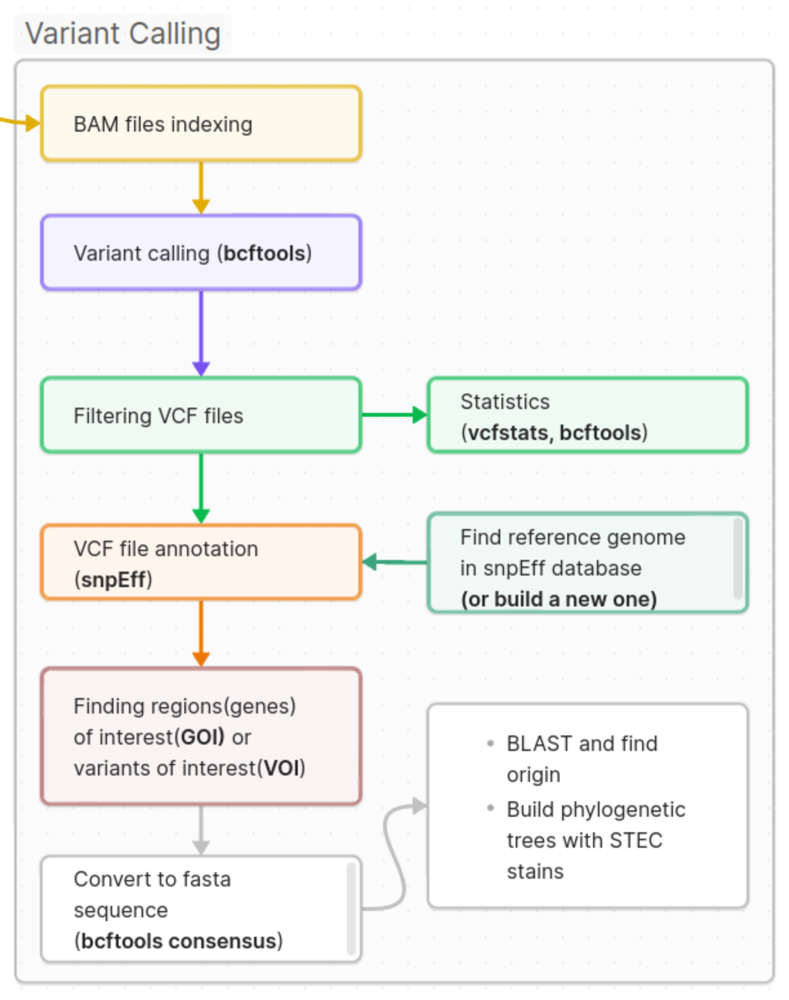

HW3.Genome Assembly. Variant Calling
Ціль
- Виклик поліморфізмів за допомогою bcftools
- Фільтрування та анотація поліморфізмів за допомогою SnpEff
- Пошук гену 16S rRNA (rrsD)/filC у консенсусному геномі
- Пошук поліморфізмів досліджуваних ліній та порівняння з відсеквенованими зразками на NCBI
- знаходження серотипу відсеквенованих зразків за допомогою ectyper
- Порівняння отриманих результатів з результатами онлайн інструментів від Центру Геномної Епідеміології
- (Optional) Побудова філогенетичного дерева на основі консенсусного геному або окремих генів
Пайплайн

Створення нового середовища та індексування референтного геному та bam файлів
#створення середовища var та активація
conda create --yes -n var samtools bamtools freebayes bedtools vcflib rtg-tools bcftools matplotlib
conda activate var
#індексування референтного геному у папці mapping
samtools faidx reference/GCF_000005845.2_ASM584v2_genomic.fasta
#індексування bam файлів
bamtools index -in DRR589139.sorted.dedup.bam
#створення папки для збереження vcf файлів
mkdir variantsВиклик поліморфізмів
#виклик поліморфізмів та запис у vcf файл у папці mapping
bcftools mpileup -f reference/GCF_000005845.2_ASM584v2_genomic.fasta DRR589139.sorted.dedup.bam | bcftools call -mv -Ob --ploidy 1 -o variants/DRR589139.vcf
#показати 40 стрічок вихідного vcf файлу
$ cat variants/DRR589139.vcf | grep -v '##' | head -4Статистика та фільтрування VCF
# стиснення файлів
bgzip variants/DRR589139.vcf
# індексування vcf файлів
tabix -p vcf variants/DRR589139.vcf
#статистика за допомогою vcfstats
rtg vcfstats variants/DRR589139.vcf
#Статистика за допомогою bcftools
bcftools stats -F reference/GCF_000005845.2_ASM584v2_genomic.fasta -s - variants/DRR589139.vcf.gz > variants/variants/DRR589139.vcf.gz.stats
# Створення графіків
mkdir variants/plots
plot-vcfstats -p variants/plots/ variants/DRR589139.vcf.gz.stats
#Фільтрування vcf файлу з поліморфізмами, якість яких вища 30 за шкалою Фреду (Phred score)
rtg vcffilter -q 30 -i variants/DRR589139.vcf.gz -o variants/DRR589139.q30.vcf.gz
#Альтернативний варіант для фільтрування
zcat variants/DRR589139.vcf.gz | vcffilter -f "QUAL >= 30" | gzip > variants/DRR589139.q30_2.vcf.gzАнотація варіантів
# Створення нового середовища annotation та активація
conda create -n annotation snpeff genometools-genometools bedtools
conda activate annotation ectyper
# Створення папки annotated
mkdir annotated | cd annotated
#Перейменування назви хромосоми. Рядок для цього файлу: "NC_000913.3 Chromosome"
nano chrname.txt
#Перейменування назви хромосоми у vcf файлі
bcftools annotate --rename-chrs chrname.txt variants/DRR589139.q30.vcf.gz -o variants/DRR589139_new.q30.vcf.gz
# Анотація за допомогою SnpEff
snpEff -v Escherichia_coli_str_k_12_substr_mg1655_gca_000005845 DRR589139_new.q30.vcf > annotated/DRR589139_new.q30.anno.vcfПроаналізуйте отримані HTML репорти згенеровані програмою snpEff при запуску останньої команди. Збережіть важливі дані для презентації:
- Загальна кількість SNP
Одна заміна на яку кількість нуклеотидів в геномі
Ts/Tv пропорція
Кількість інсерцій та делецій
Кількість SNP в екзонах/інтронах/нетрансльованих регіонах
Кількість Missense/Nonsense/Silent мутацій
Пошук генів та Створення консенсусної ДНК
# Переходимо до папки variants, звідки будемо виконувати всі команди
#фільтрування vcf файлу та пошук гену rrsD за допомогою команди grep
grep -F "rrsD" annotated/DRR.q30.anno.vcf > rrsD.vcf
# Повернення до попередньої назви хромосоми vcf файлу
bcftools annotate --rename-chrs chrname_rev.txt annotated/DRR589139_new.q30.anno.vcf>DRR589139_renamed_chr.vcf
#індексування vcf файлу
bcftools index annotated/DRR589139_renamed_chr.vcf
# Генерування консенсусного FASTA файлу з VCF з папки variants
cat ../GCF_000005845.2_ASM584v2_genomic.fasta | bcftools consensus annotated/DRR589139_renamed_chr.vcf > consensus_DRR589139.fasta
#Пошук гену rrsD консенсусного файлу
samtools faidx consensus_DRR589139.fasta NC_000913.3:3427221-3428762 > rrsD_DRR589139.fastaЗнаходження серотипу за допомогою ectyper
Для знаходження серотипу як правило використовують fastq файли, оскільки створення консенсусу з референтного геному може створювати так званий “reference bias” коли частина послідовності з референтного геному з’являється у консенсусному геномі. І для того щоб обходити це, використовується маскування (створення N’s у референс геномі) для того щоб елімінувати ефекти низького покриття чи поганого мапування на референс. Відповідно будувати філогенетичні дерева на основі створеного консенсусу також буває доволі проблематично і потрібно використовувати мапування окремих генів та створення їх консенсусних послідовностей для елімінації впливу перенесених з референсу нуклеотидів.
O-антиген (O-тип): найінформативніші гени з О-кластеру капсульно-ліпополісахаридного шляху
wzx (O-antigen flippase)
wzy (O-antigen polymerase)
wzm / wzt (ABC-транспортерний шлях для частини O-груп)
Часто достатньо парного визначення wzx/wzy або wzm/wzt для конкретної O-групи; для окремих серогруп існують «сигнатурні» гени (напр., rfbE для O157).
H-антиген (H-тип):
fliC (флагелін — основний маркер H-типу)
у частини ліній — альтернативні флагелінові гени (flkA / flmA / flnA), але здебільшого достатньо fliC.
👉 Практично: інструменти на кшталт ECTyper/SerotypeFinder шукають саме ці гени в рідах або контигах і віддають O:H.
# активація середовища annotation
conda activate annotation
# запуск ectyper для визначення серотипу
ectyper -i SRR18779612_1.fastq SRR18779612_2.fastq --out ectyper_outВизначений серотип додайте до вашої презентації
Побудова філогенетичного дерева
- Знайдіть у створеному консенсусному геномі ген “filC” та спробуйте знайти найбільш споріднені геноми(штами) за допомогою інструменту “blastn”. Відповідну інформацію у вигляді скріншоту додайте до висновків вашої презентації
- (Optional Task)Також проведіть множинне вирівнювання та побудову філогенетичного дерева у програмі MEGA. Хто працює у WSL, то потрібно встановити на базі Windows. Отримані дерева додайте у презентацію. Пошук ліній для філогенетичного дерева можна здійснити також за допомогою інструменту BLAST шляхом завантаження найбільш відповідних ліній з різною спорідненістю. Список ліній E.coli можна також знайти у базі NCBI Taxonomy, також можна пошукати у базі Popset, Gene.
- Оцінити розташування проаналізованої лінії серед інших ліній E.coli за допомогою інстументів Центру Геномної Епідеміології. Скористайтесь fastq файлами відовідними інструментами:
- MLST 2.0
- SerotypeFinder 2.0
- KmerFinder 3.2
Отримані результати додайте до презентації та порівняйте з власноруч отриманими результатами де це релевантно.